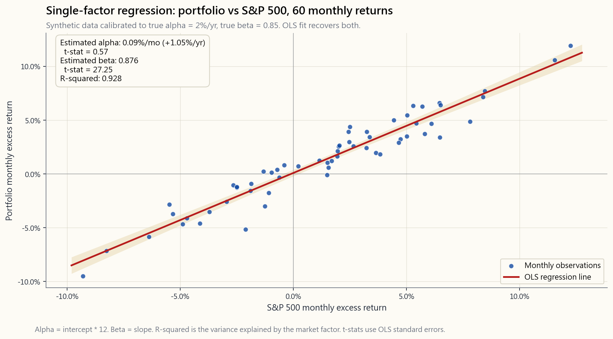
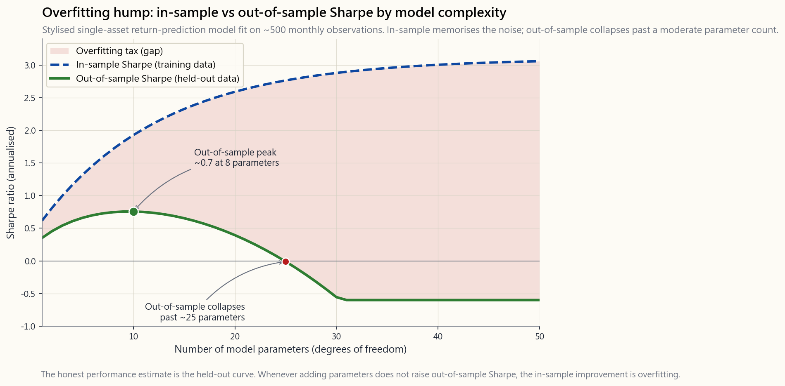

Week 45: Quantitative Methods for Investors — Regression, Time Series, ML Signals
1. Why This Is Important
This is the week where the toolkit gets real. For forty-three weeks we have leaned on intuition, history, and a handful of identities — duration, the dividend-discount equation, the four-tranche sketch, the barbell. From here on, anyone you meet who is paid to find alpha — the fund manager you might fire, the quant shop pitching you a sleeve, the LinkedIn-posting "AI signal" guy — is going to wave some combination of regression coefficients, t-stats, R-squared, walk-forward validation curves, and machine-learning out-of-sample charts in your face. Quantitative methods are the language. If you do not speak the language at a passable level, every claim of skill sounds equally credible, and you will end up paying 1.5% per year for a regression a junior analyst could have run in an afternoon.
This matters for four reasons.
single most important sentence in modern empirical finance is *"alpha is what is left over after a regression on the right factors."* A manager who beats the S&P by 3% per year is, until you regress their returns on MKT/SMB/HML/UMD/RMW, indistinguishable from one who simply tilted small-value-momentum and rode the well-known premia. Two-thirds of the post-1990 mutual-fund alpha anomaly literature evaporated the moment the right benchmarks went into the regression. Of the structural sources of alpha, an information edge is the hardest to come by; the regression is the test that tells you whether anyone has it.
Investors are pattern-recognition machines, and markets generate roughly 10 million testable patterns a year. The "January effect," the "Super Bowl indicator," "sell in May," the dozens of "presidential cycle" charts — every one of them looks like a real signal because, in any large enough dataset, something will look like a real signal. The multiple-testing correction (Bonferroni, Benjamini-Hochberg, Lopez de Prado's deflated Sharpe) is the mathematical statement of "if you tested 100 strategies at p<0.05, you should expect roughly 5 false positives." Without that frame, every backtest is a confession of survivorship bias.
pure random walk admits no momentum strategy, no mean-reversion strategy, and no forecasting model better than the unconditional mean. A trending series with positive autocorrelation rewards momentum; a mean-reverting series rewards spread trading. The tests for stationarity, autocorrelation, and cointegration are not academic exercises — they answer the question *can I extract anything from this data, in principle?* before you spend a year tuning a signal that the underlying process never had.
The most dangerous sentence in 2026 finance is "we use machine learning to find non-linear patterns in market data." Most ML alpha pitches are 80% feature engineering, 15% labelling, and 5% model. If you understand train/validation/test splits, walk-forward evaluation, and the difference between in-sample and out-of-sample Sharpe, you can ask the three questions that pop the bubble: *what was the holdout window? how was it chosen? what is the strategy's Sharpe on data after the model was last retrained?* The answers, more often than not, kill the pitch.
2. What You Need to Know
2.1 Linear regression as the alpha-attribution machine
The single-factor CAPM regression is the simplest version of the machine. You take a portfolio's monthly excess return $R_p - R_f$ and the market's excess return $R_m - R_f$, fit the line
$$R_p - R_f = \alpha + \beta \cdot (R_m - R_f) + \varepsilon,$$
and read off two numbers. $\beta$ is the slope: a one-percent move in the market produces, on average, a $\beta$-percent move in the portfolio. $\alpha$ is the intercept: the portfolio's average excess return after you strip out everything its market exposure already explained. The residual $\varepsilon$ is the part the model gives up — what is left after $\beta$ has done its work.
The chart in §2.1 shows what this looks like in practice on five years of monthly data calibrated to a portfolio with $\alpha = 2\%$ per year and $\beta = 0.85$. The dots scatter, the line slopes up, and the intercept reads about 17 basis points per month — exactly the 2%-annualised alpha we baked in. The cloud of dots above and below the line is $\varepsilon$: the part this single factor cannot explain, which is where multi-factor regressions go to work.

The Fama-French extension simply adds more right-hand-side terms:
$$R_p - R_f = \alpha + \beta_1 \cdot \text{MKT} + \beta_2 \cdot \text{SMB} + \beta_3 \cdot \text{HML} + \beta_4 \cdot \text{UMD} + \varepsilon.$$
Run this regression on a small-cap value fund and you will discover that its "alpha" from the one-factor model — say 4% per year — was actually a $\beta_2$ loading of 0.40 on size and a $\beta_3$ loading of 0.30 on value, multiplied by the 1963-2024 SMB and HML premia we catalogued in Week 23. Subtract those and the residual alpha is near zero, and not statistically distinguishable from it. Three percent of the four was factor compensation, not skill. That is the same finding S&P SPIVA prints every year; the regression is just the mathematical statement of why.
2.2 Residuals as the working definition of alpha
The intercept is alpha-on-paper; the residuals are alpha-in-process. A skilled manager generates not just a positive intercept but a residual series whose t-statistic survives the noise. If a fund has alpha of 0.20% per month with a residual standard deviation of 2% per month over 60 months, the t-stat is
$$t = \frac{0.20\%}{2\%/\sqrt{60}} = \frac{0.20\%}{0.258\%} \approx 0.78.$$
That is not statistically significant — there is no way to distinguish that intercept from zero with sixty data points and that much noise. You need either a longer window, a higher alpha, or a lower residual vol — typically all three — for the t-stat to clear the conventional 2.0 threshold. Alpha is rare, and the t-stat is the arithmetic of how rare. A 2% alpha at 5% residual vol needs roughly 25 years of monthly data before its t-stat trips 2.0. Twenty-five years. That is how long it takes to prove skill at that magnitude — not detect it, prove it. Most managers have not been managing money for twenty-five years.
2.3 Cross-sectional regression for stock picking
The CAPM regression is time-series: one fund, T monthly returns, one slope. The other family is cross-sectional: one date, N stocks, fit returns against current-snapshot characteristics.
$$r_{i,t+1} = \gamma_0 + \gamma_1 \cdot \text{B/M}_{i,t} + \gamma_2 \cdot \text{Size}_{i,t} + \gamma_3 \cdot \text{Mom}_{i,t} + u_{i,t+1}.$$
You run this for every month, collect the time series of $\gamma_1, \gamma_2, \gamma_3$ slopes, and average them. The average $\gamma_j$ is the realised premium per unit of factor exposure, and its t-stat tells you whether the factor pays. This is the Fama-MacBeth procedure (1973), and it is still the workhorse of academic factor research half a century later. Every "barra-style risk model" you have ever seen on a sell-side desk is some flavour of cross-sectional regression.
The retail use-case is signal building. You take a universe of 500 stocks, score each on (book-to-market, profitability, 12-month momentum), regress next-month returns against those scores, form the long-short portfolio implied by the slopes, and rebalance. That is the inside of every smart-beta ETF.
2.4 Time series: AR, MA, ARMA, and the random walk benchmark
For pricing series, the unconditional first question is: is this a random walk, or is there persistence? An AR(1) model
$$r_t = \phi \cdot r_{t-1} + \epsilon_t$$
estimates the autocorrelation $\phi$ at lag one. If $\phi > 0$, returns trend (this week's move predicts next week's). If $\phi < 0$, returns mean-revert. For US monthly equity returns the realised $\phi$ is about $+0.10$ — barely distinguishable from zero, which is why monthly stock returns are essentially impossible to forecast from their own history. For daily equity returns $\phi$ is mildly negative (microstructure mean-reversion); for cross-sectional relative returns at the 6 to 12-month horizon $\phi$ is mildly positive (Jegadeesh-Titman momentum, the cross-sectional momentum effect). Where $\phi$ is zero, no model that takes only past prices as input can win.
MA(q) and ARMA(p,q) models layer in moving-average residual terms to capture the news-arrival shock structure. In practice, for liquid equity returns, the best ARMA fits beat the zero-mean-random-walk benchmark by a few basis points of monthly RMSE — economically irrelevant after costs. For volatility series, on the other hand, AR-style models are wildly successful: volatility is highly persistent ($\phi \approx 0.95$ on daily VIX), which is why GARCH and HAR-RV models genuinely forecast tomorrow's volatility from today's. The volatility tail wags the return dog, and a lot of that asymmetry shows up here. You return dog — gets a lot of its leverage from this asymmetry. You cannot forecast next month's return; you absolutely can forecast next month's variance.
2.5 Rolling vs expanding windows, and the parameter-stability problem
Once you commit to fitting a model on history, the next choice is whether to use all of history (expanding window: at month $t$, fit on data from inception through $t-1$) or only the recent past (rolling window: at month $t$, fit on the last 60 months). Expanding windows have more data and therefore tighter estimates, if the underlying parameter is stable. Rolling windows adapt when the parameter changes, if the regime change is real and not noise.
There is no theoretically correct answer; there is only a parameter-stability test. For a CAPM beta on a megacap stock, expanding-window estimates from 1990-2024 give a roughly fixed beta — the parameter is stable and rolling adds noise. For the HML factor's market beta, on the other hand, expanding-window estimates are nonsense — the factor's beta on the market shifted sign in 2007. There the rolling window is mandatory. The practical default is a rolling 36-60 month window for monthly data, with a Chow break test for whether the parameter has shifted.
2.6 Train/validation/test, and the walk-forward defence
Every machine-learning pitch you will ever hear in finance involves the same vulnerability: the model was tuned on the same data its out-of-sample performance is reported against. The standard defense is a three-way split.
- Train (e.g. 1990-2010): fit model parameters.
- Validation (e.g. 2011-2017): tune hyperparameters — number of
- Test (e.g. 2018-2024): the model is evaluated exactly once
The brutal fact is that the test set, in an honest pipeline, is used once and then discarded. You cannot iterate on a strategy against the test set without it becoming a second validation set. Walk-forward validation generalises this: at every point in time $t$, the model is fit on data through $t-1$, used to predict $t$, and the next $t$ is appended to the training set. The realised out-of-sample performance is the only honest performance estimate.
The danger is the opposite of what most retail investors think. Overfitting does not look like a slightly-too-good in-sample result; it looks like a spectacularly good in-sample result that collapses to nothing — or worse, to negative — on the test set. The chart in §2.7 shows the canonical hump.
2.7 Overfitting, multiple testing, and the false-alpha mill

The classical curve has in-sample Sharpe rising monotonically with model complexity (more parameters, deeper trees, more features) — because with enough free parameters you can memorise the noise. Out-of-sample Sharpe rises briefly, peaks at some moderate complexity, and then collapses. The gap between the two curves is the overfitting tax. It is the single most reproducible phenomenon in empirical machine learning, and it is universal: it shows up in equity prediction, options pricing, credit scoring, and ad-click models alike.
The financial twist on top of this is multiple testing. Every researcher who tries a strategy and abandons it without publishing contributes to the survivorship of the strategies that happened to look good. If a hundred quants each try fifty signal variants on the same dataset, the combined family-wise error rate at $p < 0.05$ is essentially one. Marcos Lopez de Prado's Deflated Sharpe Ratio formalises this: the Sharpe at which a strategy must come in to beat the noise of having tried N alternatives is roughly $\sqrt{2 \log N}$ standard deviations of the null. Try a thousand strategies and the bar is roughly $\sqrt{2 \log 1000} \approx 3.7$ standard deviations of the unconditional Sharpe-noise — which on a 5-year backtest is a Sharpe of about 1.6 just to clear the bar of having looked. Most published anomalies do not clear it.
2.8 Why most ML alpha is feature engineering
Lopez de Prado's Advances in Financial Machine Learning (2018) makes the point in two slogans. "The model is the easy part." *"Most of the work is in labelling the target and engineering the features."* The reason is that financial data has a vanishingly low signal-to-noise ratio (about 0.05 R-squared per month for the best-fit linear model on equity returns), severe non-stationarity (the signal you found in 2010 may not work in 2020), and a labelling problem (was that price move a regime change, or microstructure noise?). The model — random forest, XGBoost, neural network — is largely a commoditised step. The differentiation sits in the features (which transformations of price/volume/order flow you fed in) and the labels (whether a 1% move counts as "+1" or you weighted by triple-barrier exits).
For the retail investor, the consequence is uncomfortable: the serious money in quant alpha is almost never made by training yet another XGBoost on yet another OHLCV dataset. It is made by sourcing or constructing features no one else has — alternative data, satellite imagery, credit-card panels, supply-chain text embeddings. The information lane of alpha is real but expensive. expensive. The "structural" lanes (liquidity, factor compression, vol-tail mispricing) remain the cheaper and more durable game for a single account.
3. Common Misconceptions
variance explained, not predictive power. A regression of fund returns on the S&P with R-squared = 0.95 just means the fund is correlated with the market. It tells you nothing about whether the fund's alpha is real or whether you can forecast either series from anything.
In-sample Sharpe is, on average, optimistically biased by roughly $\sqrt{N}$ standard deviations where N is the number of variants you tried. A 2.5 in-sample Sharpe routinely walks forward to 0.3.
0.05 means the probability of observing this result *given the null is true* is below 5%. With a thousand simultaneous tests, the expected number of false positives at p < 0.05 is fifty. Without a multiple-testing correction, "p<0.05" is barely an anchor.
underlying data-generating process is stable. Adding 1990s data to your TIPS-breakeven model when TIPS did not exist before 1997 is not "more data," it is contamination.
1.0 net of transaction cost on a strategy whose features were chosen in 2010 and tested through 2024 is great. Out-of-sample Sharpe of 1.0 gross of cost on a six-month holdout that the researcher iterated against forty times is meaningless.
learning fits flexible functions to whatever you feed it. With N parameters, an unregularised model can fit any pattern in N-1 data points — including the noise. Whether the pattern it found is real is a question the model itself cannot answer.
validation does not work for time series — it leaks future information into the training fold. The only valid CV for financial data is walk-forward with embargo (Lopez de Prado §7), and even then the test set is consumed once.
window. It is estimated with error and changes through time. Famously, the beta of value stocks against the market shifted from positive to roughly zero around 2007.
Statistically-significant alpha in a five-factor regression on a 60-month window is not, on its own, a skill demonstration. You need the t-stat, the residual diagnostics, and ideally a separate holdout. Twenty-five years of data, if not more.
market share has been about 30-40% of US dollar volume for the past decade. The remainder is humans, and a great deal of the quant share is execution, not signal generation. The interesting money is split.
4. Q&A Section
**Q1. If a regression gives my fund alpha = 1.5% per year and t-stat = 1.4, what should I conclude?** Nothing. T-stat 1.4 corresponds to a one-tailed p-value of about 8%, two-tailed about 16%. You cannot reject the null that the true alpha is zero. The estimate is consistent with skill and consistent with luck. You need more data, a higher alpha, or both before you can draw any conclusion.
Q2. How long do I need to evaluate a manager? Roughly 25 years for monthly data if the alpha is 2% per year and the residual vol is 5% per year — at which point the t-stat just clears 2.0. If the residual vol is higher (a typical hedge fund), multiply. The implication is uncomfortable: most "great" track records are not statistically distinguishable from luck.
**Q3. What R-squared should I expect on a single-factor CAPM regression of a US large-cap fund versus the S&P 500?** 0.85 to 0.95 is normal. An R-squared of 0.99 means the fund is a closet indexer (you should pay nothing). An R-squared of 0.50 means the fund is taking large factor or sector bets and you should run a multi-factor regression to see what they are.
Q4. Why is autocorrelation of monthly equity returns near zero? Because if it were materially positive, momentum strategies would arbitrage it away to zero, and if it were materially negative, mean-reversion strategies would do the same. The residual near-zero is the equilibrium. It survives at the cross-sectional level (relative momentum across stocks at 6-12-month horizons) where the arbitrageable shape is messier and slower.
Q5. What is "look-ahead bias" in practice? Using information you would not have had at the moment you traded. Common examples: backtesting a "buy when P/E < 15" rule using the P/E based on full-year reported earnings (which were only known months later), using GDP-revision data (revised down years after the fact) as if it were the print, or using reconstructed index constituents that exclude companies that went bankrupt mid-history. Survivorship bias is a special case.
**Q6. What is the difference between in-sample, validation, and out-of-sample?** In-sample: data the model was fit on. The fit is, mechanically, good. Validation: data used to choose hyperparameters. Independent of training but consumed in the tuning step. Out-of-sample / test: data the model has never seen. A correctly-built pipeline runs the test set exactly once, after the entire model — including hyperparameters — is frozen.
Q7. How many parameters can I use before overfitting? The rule of thumb on linear models is 10-20 observations per parameter as a minimum. For non-linear models with many degrees of freedom (random forests, neural nets) the answer depends on regularisation; the empirical defense is walk-forward Sharpe — if adding parameters does not improve walk-forward Sharpe, the in-sample improvement is overfitting.
Q8. Should I use ML or linear regression for stock prediction? Linear regression first, always. If a linear model on well-engineered features cannot find a signal, an ML model on the same features will not find one either; it will just overfit faster and feel like skill. ML earns its keep when the underlying relationship is actually non-linear, and you have enough data to estimate the non-linearity, and you have a feature set that the linear model cannot exploit. That is a small intersection.
Q9. What is "data mining" and what is wrong with it? Data mining is searching a large space of strategies for what fits past data. Mathematically it is fine; what is wrong is reporting the best one as if it had been the only one tried. Without a multiple-testing correction, the reported Sharpe is biased upward by the size of the search. Lopez de Prado's deflated Sharpe is the standard fix.
Q10. Why is feature engineering more important than the model? Because financial data is low signal-to-noise and the marginal return on model complexity is sharply diminishing. Two competing shops with the same features and different ML models tend to converge to similar Sharpe ratios; two shops with the same ML model but materially different feature sets diverge sharply. The features are where the information sits.
Q11. Can I run these regressions myself?
Yes. Python's statsmodels or scikit-learn, or R's lm(), run
a five-factor regression in two lines. Kenneth French's data
library publishes the FF5 + UMD monthly factor returns for free,
1963 to present. Subscript the time series, regress, read off
alpha and t-stat. The week's interactive lab does the basic
single-factor version inline.
Q12. What is the single most important habit? Always reserve a holdout. Always. Whatever fraction of your data you can spare — 20%, 30%, the last three years — reserve it before you do anything else, and do not look at it. When the strategy is final, exactly once, score it on the holdout. The number you get is the only honest number you will have. "Alpha is rare" stops being a slogan and becomes intuitive the first time you watch a strategy's in-sample Sharpe of 2.5 walk forward to 0.4.
第四十五週：投資者的量化方法——回歸、時間序列、機器學習信號
1. 為何這至關重要
這是工具箱真正派上用場的一週。過去四十三週，我們依賴直覺、歷史和一些固定公式——存續期、股息貼現方程式、四層結構圖示、槓鈴策略。從現在起，你所遇到的任何受薪追尋阿爾法的人——那位你可能解僱的基金經理、正在向你推銷一個配額的量化機構、還有在LinkedIn上高調宣揚「AI信號」的人——都會向你展示各種回歸係數、t統計量、R平方、前向驗證曲線以及機器學習樣本外圖表。量化方法是這個行業的語言。若你對這門語言一竅不通，每一個聲稱有技巧的說法聽起來都同樣可信，最終你將以每年1.5%的費率，為一個初級分析師一個下午就能跑出來的回歸模型付費。
這件事之所以重要，原因有四。
2. 你需要掌握的內容
2.1 線性回歸作為阿爾法歸因機器
單因子CAPM回歸是這台機器最簡單的版本。你取一個投資組合每月的超額回報 $R_p - R_f$ 和市場的超額回報 $R_m - R_f$，擬合直線
$$R_p - R_f = \alpha + \beta \cdot (R_m - R_f) + \varepsilon,$$
然後讀取兩個數字。$\beta$ 是斜率：市場每移動一個百分點，投資組合平均移動 $\beta$ 個百分點。$\alpha$ 是截距：投資組合在剔除市場暴露所能解釋的部分後，剩餘的平均超額回報。殘差 $\varepsilon$ 是模型放棄的部分——在 $\beta$ 完成其工作後剩下的東西。
第2.1節的圖表展示了實際情況：以五年月度數據為基礎，校準一個 $\alpha = 2\%$（年化）、$\beta = 0.85$ 的投資組合。數據點散落，直線向上傾斜，截距約為每月17個基點——恰好對應我們預設的年化2%阿爾法。直線上下的數據點雲就是 $\varepsilon$：單因子無法解釋的部分，這也是多因子回歸的用武之地。
Fama-French擴展只是增加了更多右側變量：
$$R_p - R_f = \alpha + \beta_1 \cdot \text{MKT} + \beta_2 \cdot \text{SMB} + \beta_3 \cdot \text{HML} + \beta_4 \cdot \text{UMD} + \varepsilon.$$
對一隻細價股價值股基金進行此回歸，你會發現其在單因子模型中的「阿爾法」——比如每年4%——實際上是0.40的規模因子（$\beta_2$）負荷和0.30的價值因子（$\beta_3$）負荷，乘以我們在第23週梳理過的1963至2024年SMB和HML溢價。扣除這些後，殘差阿爾法接近零，且在統計上與零無異。那4%中有3%是因子補償，而非技巧。這與標普SPIVA每年公佈的結論相同；回歸只是解釋其原因的數學陳述。
2.2 殘差作為阿爾法的操作定義
截距是帳面阿爾法；殘差才是運作中的阿爾法。一位有技巧的基金經理不僅能產生正截距，其殘差序列的 t統計量 還能在噪音中存活。若一隻基金在60個月內的月度阿爾法為0.20%，殘差標準差為每月2%，則t統計量為
$$t = \frac{0.20\%}{2\%/\sqrt{60}} = \frac{0.20\%}{0.258\%} \approx 0.78.$$
這在統計上並不顯著——憑借60個數據點和如此大的噪音，根本無法將該截距與零區分開來。你需要更長的窗口、更高的阿爾法或更低的殘差波動性——通常三者兼備——才能讓t統計量超過傳統的2.0門檻。阿爾法是罕見的，而t統計量正是這種稀缺性的算術表達。一個2%阿爾法、5%殘差波動性的情況，大約需要25年的月度數據，t統計量才能達到2.0。二十五年。這是在此量級下證明技巧所需的時間——不是發現，而是證明。大多數基金經理的管理年資都不到二十五年。
2.3 選股的橫截面回歸
CAPM回歸是時間序列形式：一隻基金，T個月度回報，一個斜率。另一類是橫截面形式：一個時間點，N隻股票，將回報對當期的特徵快照進行回歸。
$$r_{i,t+1} = \gamma_0 + \gamma_1 \cdot \text{B/M}_{i,t} + \gamma_2 \cdot \text{Size}_{i,t} + \gamma_3 \cdot \text{Mom}_{i,t} + u_{i,t+1}.$$
你每個月都運行這個回歸，收集 $\gamma_1, \gamma_2, \gamma_3$ 斜率的時間序列，然後取平均。平均 $\gamma_j$ 是每單位因子暴露所實現的溢價，其t統計量告訴你該因子是否有回報。這就是Fama-MacBeth方法（1973年），半個世紀後它仍然是學術因子研究的主力工具。你在賣方機構看到的每一個「巴拉式風險模型」，本質上都是某種形式的橫截面回歸。
在散戶投資者的使用場景中，這是構建信號的方式。你取一個500隻股票的股票池，按市賬率、盈利能力、12個月動量對每隻股票打分，將下個月回報對這些分數進行回歸，根據斜率構建多空投資組合，並定期再平衡。這就是每一隻智能貝塔交易所買賣基金的核心機制。
2.4 時間序列：AR、MA、ARMA與隨機遊走基準
對於價格序列，第一個最基本的問題是：這是隨機遊走，還是存在持續性？AR(1)模型
$$r_t = \phi \cdot r_{t-1} + \epsilon_t$$
估計滯後一期的自相關係數 $\phi$。若 $\phi > 0$，回報呈趨勢性（本週走勢預測下週）。若 $\phi < 0$，回報均值回歸。對於美國月度股票回報，實際 $\phi$ 約為 $+0.10$——幾乎無法與零區分，這也是為何月度股票回報本質上無法從其自身歷史預測。對於日度股票回報，$\phi$ 略為負值（微觀結構均值回歸）；對於6至12個月視野的橫截面相對回報，$\phi$ 略為正值（Jegadeesh-Titman動量效應，即橫截面動量效應）。當 $\phi$ 為零時，任何僅以過去價格為輸入的模型都無法勝出。
MA(q)和ARMA(p,q)模型加入移動平均殘差項，以捕捉新聞衝擊的到達結構。實際上，對於流動性充足的股票回報，最佳ARMA擬合僅比零均值隨機遊走基準多出幾個基點的月度均方根誤差——扣除成本後在經濟上毫無意義。然而，對於波動性序列，AR類模型卻大獲成功：波動性具有高度持續性（日度波動率指數上的 $\phi \approx 0.95$），這就是為何GARCH和HAR-RV模型能真正預測明天的波動性。波動性的尾部牽動回報的整體，這種不對稱性有大量體現。你無法預測下個月的回報；但你完全可以預測下個月的方差。
2.5 滾動窗口與擴展窗口，以及參數穩定性問題
一旦你決定在歷史數據上擬合模型，下一個選擇是使用所有歷史數據（擴展窗口：在第 $t$ 個月，使用從開始到第 $t-1$ 個月的數據進行擬合）還是僅使用近期數據（滾動窗口：在第 $t$ 個月，使用最近60個月的數據進行擬合）。擴展窗口擁有更多數據，因此估計更精確——前提是底層參數穩定。滾動窗口在參數發生變化時能夠適應——前提是機制轉變是真實的而非噪音。
理論上沒有正確答案；只有參數穩定性測試。對於大型股的CAPM貝塔，1990至2024年的擴展窗口估計給出大致固定的貝塔——參數穩定，滾動窗口只會增加噪音。但對於HML因子的市場貝塔，擴展窗口估計毫無意義——該因子的貝塔在2007年前後發生了符號轉變。在這種情況下，滾動窗口是必要的。實踐中的默認做法是月度數據使用36至60個月的滾動窗口，並配合Chow斷點測試來判斷參數是否發生了偏移。
2.6 訓練/驗證/測試，以及前向驗證防線
你在金融領域聽到的每一個機器學習推銷，都涉及同樣的漏洞：模型是在其聲稱的樣本外表現所依據的相同數據上調整的。標準的防線是三向劃分。
- 訓練集（例如1990至2010年）：擬合模型參數。
- 驗證集（例如2011至2017年）：調整超參數——特徵數量、正則化強度、樹的深度等。每個超參數設置都在訓練集上重新擬合模型，在驗證集上評分，選擇最佳超參數。
- 測試集（例如2018至2024年）：使用凍結的超參數對模型進行恰好一次的評估。不得重新調整。
危險之處與大多數散戶投資者所想的恰恰相反。過度擬合看起來並不像一個稍微太好的樣本內結果；它看起來像一個驚人的樣本內結果，到測試集上卻崩潰至零——甚至是負值。第2.7節的圖表展示了這一典型的拱形曲線。
2.7 過度擬合、多重測試與假阿爾法製造機
典型曲線顯示，樣本內夏普比率隨模型複雜度單調上升（更多參數、更深的樹、更多特徵）——因為有足夠的自由參數，你可以記住噪音。樣本外夏普比率短暫上升，在某個適中的複雜度達到峰值，然後崩潰。兩條曲線之間的差距就是過度擬合的代價。這是實證機器學習中重現性最強的現象，且具有普遍性：它出現在股票預測、期權定價、信用評分和廣告點擊模型中。
疊加在此之上的金融特色是多重測試。每一位嘗試某個策略後放棄且未發表的研究人員，都為那些碰巧看起來不錯的策略的生存提供了貢獻。如果一百位量化分析師各自在同一個數據集上嘗試五十種信號變體，在 $p < 0.05$ 水準下的整體族系誤差率基本上等於一。Marcos Lopez de Prado的縮減夏普比率將此形式化：一個策略需要達到的夏普比率，才能超越嘗試了 N 個替代方案所產生的噪音，大約是無條件夏普噪音的 $\sqrt{2 \log N}$ 個標準差。嘗試一千個策略，門檻大約是 $\sqrt{2 \log 1000} \approx 3.7$ 個標準差——在5年回測中，這意味著夏普比率約需達到1.6，才能合理地說「我曾認真篩選過」。大多數已發表的異象都達不到這個標準。
2.8 為何大多數機器學習阿爾法本質上是特徵工程
Lopez de Prado的《金融機器學習的進階》（2018年）用兩句口號表達了這一觀點。「模型是最簡單的部分。」「大部分工作在於標記目標和構建特徵。」 原因在於：金融數據的信噪比極低（月度股票回報最佳線性模型的R平方約為0.05），非平穩性嚴重（你在2010年發現的信號在2020年可能失效），以及存在標籤問題（那次價格移動是機制轉變還是微觀結構噪音？）。模型本身——隨機森林、XGBoost、神經網絡——在很大程度上是商品化的步驟。差異化體現在特徵（你輸入的是價格/成交量/訂單流的哪些轉換）和標籤（1%的走勢是否算作「+1」，還是你按三重障礙退出加權）上。
對於散戶投資者而言，這個結論令人不安：量化阿爾法中的真正機遇，幾乎從來不是靠在又一個OHLCV數據集上再訓練一個XGBoost模型獲得的。它來自於獲取或構建別人沒有的特徵——另類數據、衛星圖像、信用卡面板、供應鏈文本嵌入。阿爾法的信息通道是真實的，但成本高昂。「結構性」通道（流動性、因子壓縮、波動性尾部定價錯誤）對個人賬戶而言，仍然是成本更低、更持久的遊戲。
3. 常見誤解
4. 問答環節
問題1：若回歸給出我的基金阿爾法=每年1.5%，t統計量=1.4，我應該得出什麼結論？
毫無結論。t統計量1.4對應單尾p值約8%，雙尾約16%。你無法拒絕真實阿爾法為零的零假設。這個估計值與技巧和運氣都相符。你需要更多數據、更高的阿爾法，或兩者兼備，才能得出任何結論。
問題2：我需要多長時間來評估一位基金經理？
若阿爾法為每年2%，殘差波動性為每年5%，則月度數據大約需要25年——此時t統計量才剛好達到2.0。若殘差波動性更高（典型的對沖基金），則所需時間更長。這個推論令人不安：大多數「出色的」業績記錄，在統計上與運氣無法區分。
問題3：對美國大型股基金與標普500進行單因子CAPM回歸，R平方應該是多少？
0.85至0.95是正常範圍。R平方為0.99意味著該基金是偽裝的指數基金（你不應該支付任何費用）。R平方為0.50意味著該基金在大量押注因子或行業，你應該進行多因子回歸，看看他們的暴露究竟是什麼。
問題4：為何月度股票回報的自相關性接近於零？
因為若自相關性明顯為正，動量策略就會將其套利至接近零；若明顯為負，均值回歸策略也會做同樣的事。剩餘的近零值是均衡結果。它在橫截面層面（6至12個月視野的股票相對動量）中得以存續，因為在那裡可套利的形態更零散、更緩慢。
問題5：「前視偏差」在實際操作中是什麼？
使用在交易時刻你本不可能擁有的信息。常見例子包括：用基於全年已申報盈利計算的市盈率（實際上數月後才知曉）回測「市盈率<15時買入」的規則；使用GDP修訂數據（多年後向下修訂的數字）好像它就是當初的初值；或使用重構的指數成份股歷史，排除了歷史中途破產的公司。生存者偏差是一個特例。
問題6：樣本內、驗證集和樣本外有什麼區別？
樣本內：模型擬合所用的數據。擬合在機制上必然良好。驗證集：用於選擇超參數的數據。獨立於訓練，但在調參步驟中被消耗。樣本外/測試集：模型從未見過的數據。一個正確構建的流程，在整個模型——包括超參數——凍結後，對測試集進行恰好一次的評估。
問題7：在過度擬合之前，我可以使用多少個參數？
線性模型的經驗法則是每個參數至少10至20個觀測值。對於具有大量自由度的非線性模型（隨機森林、神經網絡），答案取決於正則化；實證上的防線是前向夏普比率——若增加參數不能改善前向夏普比率，則樣本內的改善就是過度擬合。
問題8：應該使用機器學習還是線性回歸進行股票預測？
線性回歸在先，永遠如此。若線性模型在精心設計的特徵上找不到信號，機器學習模型在相同特徵上也找不到；它只會更快地過度擬合，讓你感覺像是在發揮技巧。機器學習在以下情況才能體現價值：底層關係確實是非線性的，且你有足夠的數據來估計這種非線性，且你有線性模型無法利用的特徵集。這是個很小的交集。
問題9：什麼是「數據挖掘」，它有何問題？
數據挖掘是在大量策略空間中搜索對過去數據擬合良好的策略。數學上這本身沒問題；問題在於將最佳結果呈報，好像它是唯一嘗試過的策略。沒有多重測試校正，報告的夏普比率因搜索規模的大小而向上偏差。Lopez de Prado的縮減夏普比率是標準的修正方法。
問題10：為何特徵工程比模型本身更重要？
因為金融數據信噪比低，模型複雜度的邊際回報急劇遞減。兩個使用相同特徵、不同機器學習模型的機構，往往收斂到相似的夏普比率；兩個使用相同機器學習模型、但特徵集有實質差異的機構，表現則大相徑庭。信息所在之處，正是特徵。
問題11：我自己能運行這些回歸嗎？
可以。Python的 statsmodels 或 scikit-learn，或R的 lm()，只需兩行代碼即可運行五因子回歸。Kenneth French的數據庫免費公佈了1963年至今的FF5加UMD月度因子回報。對時間序列進行下標，運行回歸，讀出阿爾法和t統計量。本週的互動實驗室以內聯方式完成基本的單因子版本。
問題12：最重要的單一習慣是什麼？
永遠保留留出集。永遠。無論你能留出多少比例的數據——20%、30%、最後三年——在你做任何其他事情之前先留出，且不要查看它。當策略最終確定後，恰好一次，在留出集上對其進行評分。你得到的那個數字是你所能擁有的唯一誠實的數字。「阿爾法是罕見的」從此不再只是口號，而是直覺——當你第一次親眼看到一個策略的2.5樣本內夏普比率前向跑出0.4時，你便會真正明白。
第四十五週：投資人的量化方法——迴歸、時間序列與機器學習訊號
1. 為什麼這很重要
這是工具箱真正派上用場的一週。四十三週以來，我們仰賴直覺、歷史與幾個恆等式——存續期間、股利折現模型、四段式架構草圖、啞鈴策略。從這裡開始，你遇到的任何受薪的尋找阿爾法的人——那位你可能解僱的基金經理人、向你推銷投資組合的量化公司、在LinkedIn上發文的「AI訊號」達人——都會拿著某種迴歸係數、t統計量、R平方、向前驗證曲線和機器學習樣本外圖表來說服你。量化方法就是這個領域的語言。如果你無法以基本程度理解這門語言，所有聲稱具備技巧的說法聽起來都同樣可信，最終你將為一個初級分析師花一個下午就能跑出來的迴歸，每年付出1.5%的費用。
這件事重要，原因有四。
2. 你需要掌握的內容
2.1 線性迴歸作為阿爾法歸因機器
單因子資本資產定價模型迴歸是這台機器最簡單的版本。你取投資組合的月超額報酬 $R_p - R_f$ 與市場超額報酬 $R_m - R_f$，擬合直線
$$R_p - R_f = \alpha + \beta \cdot (R_m - R_f) + \varepsilon,$$
並讀出兩個數字。$\beta$ 是斜率：市場每移動一個百分點，投資組合平均移動 $\beta$ 個百分點。$\alpha$ 是截距：在扣除市場曝險已解釋的部分之後，投資組合的平均超額報酬。殘差 $\varepsilon$ 是模型放棄的部分——在 $\beta$ 完成其工作後剩下的東西。
§2.1的圖表呈現了這在實務中的樣貌：以五年月度資料校準，投資組合的 $\alpha = 2\%$/年，$\beta = 0.85$。散點圖中的點分散開來，直線向上傾斜，截距約為每月17個基點——正好對應我們設定的2%年化阿爾法。直線上下的點雲就是 $\varepsilon$：這個單一因子無法解釋的部分，也是多因子迴歸接手的地方。
Fama-French延伸模型只是增加了更多右側項：
$$R_p - R_f = \alpha + \beta_1 \cdot \text{MKT} + \beta_2 \cdot \text{SMB} + \beta_3 \cdot \text{HML} + \beta_4 \cdot \text{UMD} + \varepsilon.$$
對一檔小型股基金執行這個迴歸，你會發現其在單因子模型中的「阿爾法」——例如每年4%——其實是規模因子 $\beta_2$ 載量0.40與價值因子 $\beta_3$ 載量0.30，乘以第23週歸納的1963至2024年SMB與HML風險溢酬。扣除這些之後，殘差阿爾法接近零，且在統計上無法與零區分。那4%中有3%是因子補償，而非技巧。這與S&P SPIVA每年公布的結論相同；迴歸不過是在數學上說明了原因。
2.2 殘差作為阿爾法的工作定義
截距是紙面上的阿爾法；殘差是運作中的阿爾法。一位技巧出色的基金經理人產生的不僅是正截距，更是一個殘差序列，其t統計量能在雜訊中存活。若一檔基金在60個月內的月阿爾法為0.20%、殘差標準差為2%，t統計量為
$$t = \frac{0.20\%}{2\%/\sqrt{60}} = \frac{0.20\%}{0.258\%} \approx 0.78.$$
這不具統計顯著性——以六十個資料點和這麼大的雜訊，無法將該截距與零區分開來。你需要更長的時間窗口、更高的阿爾法，或更低的殘差波動性——通常三者兼備——t統計量才能超過慣例的2.0門檻。阿爾法很稀罕，而t統計量正是稀罕程度的算術表達。一個阿爾法2%、殘差波動性5%的策略，大約需要25年的月度資料，t統計量才能剛好超過2.0。二十五年。這是證明技巧存在所需的時間——不是察覺，是證明。大多數基金經理人管理資金的時間還不到二十五年。
2.3 用於選股的橫截面迴歸
資本資產定價模型迴歸是時間序列式的：一檔基金、T個月報酬、一個斜率。另一類是橫截面式的：一個時間點、N檔股票，將報酬對當前快照特徵進行擬合。
$$r_{i,t+1} = \gamma_0 + \gamma_1 \cdot \text{B/M}_{i,t} + \gamma_2 \cdot \text{Size}_{i,t} + \gamma_3 \cdot \text{Mom}_{i,t} + u_{i,t+1}.$$
你對每個月執行這個迴歸，收集 $\gamma_1, \gamma_2, \gamma_3$ 斜率的時間序列，然後取平均。平均 $\gamma_j$ 是每單位因子曝險的實現風險溢酬，其t統計量告訴你這個因子是否有報酬。這就是Fama-MacBeth程序（1973年），半世紀後它依然是學術因子研究的主力工具。你在賣方桌上看到的每一個「Barra式風險模型」，都是橫截面迴歸的某種形式。
零售用途在於建立訊號。你取500檔股票的宇宙，對每檔股票的（股價淨值比、獲利能力、12個月動能）進行評分，將下個月報酬對這些分數進行迴歸，依斜率構成多空投資組合，並定期再平衡。這就是每一檔智慧貝塔指數股票型基金的內部運作。
2.4 時間序列：AR、MA、ARMA與隨機漫步基準
對於定價序列，無條件的首要問題是：這是隨機漫步，還是有持續性？AR(1)模型
$$r_t = \phi \cdot r_{t-1} + \epsilon_t$$
估計滯後一期的自相關 $\phi$。若 $\phi > 0$，報酬趨勢化（本週的移動預測下週的移動）。若 $\phi < 0$，報酬均值回歸。美國月度股票報酬的實現 $\phi$ 約為 $+0.10$——幾乎與零無法區分，這就是為何月度股票報酬基本上無法從自身歷史預測。對於日度股票報酬，$\phi$ 略為負值（微觀結構均值回歸）；對於6至12個月期間的橫截面相對報酬，$\phi$ 略為正值（Jegadeesh-Titman動能，即橫截面動能效應）。當 $\phi$ 為零時，任何僅以過去價格為輸入的模型都無法取勝。
MA(q)與ARMA(p,q)模型加入移動平均殘差項，以捕捉消息到來的衝擊結構。在實務中，對於流動性良好的股票報酬，最佳ARMA擬合在月度均方根誤差上僅比零均值隨機漫走基準好幾個基點——在成本扣除後毫無經濟意義。但對於波動性序列，AR式模型則大獲全勝：波動性具有高度持續性（日度波動率指數的 $\phi \approx 0.95$），這就是為何GARCH與HAR-RV模型能真正預測明日波動性。波動性尾巴支配報酬這條狗，這個不對稱性的許多部分在此顯現。你無法預測下個月的報酬；你絕對可以預測下個月的變異數。
2.5 滾動窗口與擴展窗口，以及參數穩定性問題
一旦決定在歷史資料上擬合模型，下一個選擇是使用全部歷史（擴展窗口：在時間 $t$，以從開始到 $t-1$ 的資料擬合）還是僅使用近期資料（滾動窗口：在時間 $t$，以最近60個月的資料擬合）。擴展窗口資料較多，因此估計更精確——如果底層參數穩定的話。滾動窗口在參數改變時能夠適應——如果體制轉換是真實的而非雜訊的話。
理論上沒有正確答案；只有參數穩定性檢定。對於大型市值股票的資本資產定價模型貝塔，1990至2024年的擴展窗口估計給出大致固定的貝塔——參數穩定，滾動窗口只會增加雜訊。但對於HML因子的市場貝塔，擴展窗口估計毫無意義——該因子對市場的貝塔在2007年前後改變了符號。在這種情況下，滾動窗口是必須的。實務上的預設值是月度資料採用36至60個月的滾動窗口，並搭配Chow結構斷點測試，以判斷參數是否已發生轉移。
2.6 訓練集/驗證集/測試集，以及向前驗證的防禦機制
你在金融領域聽到的每一個機器學習推銷，都存在同樣的弱點：模型是在與其樣本外績效報告所用的相同資料上調校的。標準防禦是三向分割。
- 訓練集（例如1990至2010年）：擬合模型參數。
- 驗證集（例如2011至2017年）：調校超參數——特徵數量、正則化強度、樹的深度等。在驗證集上評分時，每個超參數設定都會在訓練集上重新擬合，選出最佳超參數。
- 測試集（例如2018至2024年）：以凍結的超參數對模型進行恰好一次的評估，不再重新調校。
危險之處與大多數散戶投資人的想像相反。過度擬合看起來不像是稍微好看的樣本內結果；它看起來像是驚人出色的樣本內結果，在測試集上卻崩潰為零——甚至更糟，崩潰為負值。§2.7的圖表呈現了這個典型的駝峰形狀。
2.7 過度擬合、多重檢定與偽阿爾法工廠
典型曲線中，樣本內夏普比率隨模型複雜度單調遞增（更多參數、更深的樹、更多特徵）——因為擁有足夠的自由參數，你可以記住雜訊。樣本外夏普比率先短暫上升，在某個中等複雜度達到峰值，然後崩潰。兩條曲線之間的差距就是過度擬合的代價。這是實證機器學習中最具再現性的現象，且具有普遍性：它出現在股票預測、選擇權定價、信用評分以及廣告點擊模型中。
在此之上的金融特殊性是多重檢定。每一個嘗試策略後在未發表情況下放棄的研究者，都為那些碰巧看起來不錯的策略的倖存貢獻了一分力。如果一百位量化研究員各自在同一資料集上嘗試五十種訊號變體，在 $p < 0.05$ 下的整體族群誤差率基本上為一。Marcos Lopez de Prado的修正夏普比率將此形式化：一個策略必須達到的夏普比率，以超越嘗試了N個替代方案所產生的雜訊，大約是無條件夏普雜訊的 $\sqrt{2 \log N}$ 個標準差。嘗試一千個策略，門檻大約是 $\sqrt{2 \log 1000} \approx 3.7$ 個標準差——在五年回測中，光是要正當化「曾經看過」這件事本身，夏普比率就需要約1.6。大多數已發表的異常現象達不到這個門檻。
2.8 為何大多數機器學習阿爾法是特徵工程
Lopez de Prado的《金融機器學習進階》（2018年）用兩句話點出這件事。「模型是最容易的部分。」「大部分工作在於標記目標與工程化特徵。」 原因是金融資料的訊雜比極低（最佳線性模型對股票報酬的月度R平方約為0.05）、嚴重的非穩定性（2010年找到的訊號在2020年可能失效），以及標記問題（那個價格移動是體制轉換，還是微觀結構雜訊？）。模型——隨機森林、XGBoost、神經網路——在很大程度上是已商品化的步驟。差異化在於特徵（你輸入的價格/成交量/委託流的哪些轉換）與標記（1%的移動是否算作「+1」，或你是否以三重障礙退出加權）。
對散戶投資人而言，這個結論令人不舒服：量化阿爾法的嚴肅資金，幾乎從來不是靠在另一個OHLCV資料集上訓練又一個XGBoost賺到的。它是靠取得或建構別人沒有的特徵賺到的——另類資料、衛星影像、信用卡消費面板、供應鏈文字嵌入。阿爾法的資訊通道是真實的，但成本高昂。「結構性」通道（流動性、因子壓縮、波動率尾部錯誤定價）對於單一帳戶而言，仍是成本更低、更持久的策略選擇。
3. 常見誤解
4. 問答章節
Q1. 如果迴歸給出我的基金阿爾法= 1.5%/年且t統計量= 1.4，我應該得出什麼結論？ 什麼都不能得出。t統計量1.4對應的單尾p值約為8%，雙尾約為16%。你無法拒絕真實阿爾法為零的虛無假設。這個估計值與技巧相符，也與運氣相符。在能做出任何結論之前，你需要更長的資料、更高的阿爾法，或兩者兼備。
Q2. 我需要多長時間來評估一位基金經理人？ 若月度資料的阿爾法為2%/年、殘差波動性為5%/年，大約需要25年——此時t統計量才剛超過2.0。若殘差波動性更高（典型的避險基金），則時間倍增。這個含義令人不安：大多數「優秀」的業績記錄，在統計上無法與運氣區分。
Q3. 美國大型股基金對S&P 500的單因子資本資產定價模型迴歸，R平方應該多少？ 0.85至0.95是正常範圍。R平方0.99代表這檔基金是「偷懶的指數化」（你不應該支付任何費用）。R平方0.50代表基金承擔了大量因子或類股押注，你應該執行多因子迴歸，看看它們究竟是什麼。
Q4. 為什麼月度股票報酬的自相關接近零？ 因為若它明顯為正，動能策略就會將其套利至零；若明顯為負，均值回歸策略也會如此。剩下的接近零是均衡狀態。它在橫截面層面（跨股票相對動能在6至12個月期間）仍然存在，因為那裡的可套利形式更雜亂、更慢。
Q5. 「前視偏差」在實務中是什麼？ 使用你在交易時實際上不可能擁有的資訊。常見例子：以「當本益比 < 15時買進」的規則進行回測，卻使用全年已報告盈餘計算的本益比（而這個數字數個月後才知曉）；使用國內生產毛額修正數據（事後多年才修正）當作公布時的數字；或使用重建的指數成分，排除了中途破產的公司。倖存者偏差是其特殊情形。
Q6. 樣本內、驗證集與樣本外的差異是什麼？ 樣本內：模型擬合所用的資料。擬合結果在機制上會很好。驗證集：用於選擇超參數的資料。獨立於訓練，但在調校步驟中被消耗。樣本外/測試集：模型從未見過的資料。一個正確建立的流程，在整個模型——包括超參數——凍結之後，恰好執行一次測試集評估。
Q7. 使用多少個參數才會開始過度擬合？ 線性模型的經驗法則是每個參數至少10至20個觀測值。對於自由度較多的非線性模型（隨機森林、神經網路），答案取決於正則化；實證防禦是向前驗證的夏普比率——如果增加參數無法改善向前驗證夏普比率，樣本內的改善就是過度擬合。
Q8. 我應該使用機器學習還是線性迴歸來預測股票？ 線性迴歸永遠優先。如果在精心工程化的特徵上，線性模型找不到訊號，那麼機器學習模型在相同特徵上也找不到；它只會更快地過度擬合，感覺上像是技巧。只有當底層關係確實是非線性的，而且你有足夠的資料估計這個非線性，而且你有線性模型無法利用的特徵集時，機器學習才真正發揮其價值。這是個很小的交集。
Q9. 什麼是「資料探勘」，它有什麼問題？ 資料探勘是在大量策略空間中搜索什麼能擬合歷史資料。數學上沒有問題；真正的問題是把最好的那個當作唯一嘗試的那個來報告。沒有多重檢定校正，報告的夏普比率會因搜索範圍的大小而向上偏差。Lopez de Prado的修正夏普比率是標準的修正方法。
Q10. 為什麼特徵工程比模型更重要？ 因為金融資料的訊雜比很低，模型複雜度帶來的邊際報酬急速遞減。兩個擁有相同特徵但不同機器學習模型的機構，夏普比率往往收斂；兩個擁有相同模型但特徵集有實質差異的機構，夏普比率則明顯分化。資訊存在於特徵之中。
Q11. 我可以自己執行這些迴歸嗎？
可以。Python的 statsmodels 或 scikit-learn，或R的 lm()，兩行程式碼就能執行五因子迴歸。Kenneth French的資料庫免費提供FF5加UMD的月度因子報酬，從1963年至今。對時間序列取子集，執行迴歸，讀出阿爾法與t統計量。本週的互動實驗室提供了基本的單因子版本。
Q12. 最重要的一個習慣是什麼？ 永遠保留一個保留集。永遠。不論你能從資料中撥出多少——20%、30%、最後三年——在做任何事之前先保留它，且不要看它。當策略最終確定後，恰好一次，在保留集上評分。你得到的數字是你將擁有的唯一誠實數字。「阿爾法很稀罕」不再只是一句口號，而是在你第一次看到策略的樣本內夏普比率2.5向前驗證到0.4時，直覺上便能理解的事實。
第四十五周：投资者量化方法——回归、时间序列与机器学习信号
1. 为何重要
这一周，我们的工具箱终于变得真刀真枪。过去四十三周，我们依靠直觉、历史经验和少数几个公式——久期、股息折现方程、四档结构示意图、哑铃策略。从现在起，你遇到的任何一个靠寻找阿尔法为生的人——你可能会解雇的基金经理、向你兜售子策略的量化机构、在领英上发帖的"AI信号"大师——都会挥舞着回归系数、t统计量、R平方、前向验证曲线和机器学习样本外图表向你游说。量化方法是这个行业的语言。如果你对这门语言一窍不通，任何关于技能的说法听起来都同样可信，最终你会以每年1.5%的代价，为一个初级分析师花一个下午就能跑出的回归付账。
这件事重要，原因有四。
2. 你需要掌握的内容
2.1 线性回归作为阿尔法归因机器
单因子CAPM回归是这台机器最简单的形态。你取投资组合的月度超额收益$R_p - R_f$和市场超额收益$R_m - R_f$，拟合直线
$$R_p - R_f = \alpha + \beta \cdot (R_m - R_f) + \varepsilon,$$
读取两个数字。$\beta$是斜率：市场涨跌1%，投资组合平均对应涨跌$\beta$%。$\alpha$是截距：剔除市场敞口已经解释的部分后，投资组合的平均超额收益。残差$\varepsilon$是模型放弃的部分——$\beta$完成工作后所剩余的东西。
§2.1的图表展示了这在实践中的样子：以五年月度数据为基础，校准为$\alpha = 2\%$/年、$\beta = 0.85$的投资组合。散点分布，直线向上倾斜，截距读数约为每月17个基点——恰好是我们预设的2%年化阿尔法。直线上下的点云就是$\varepsilon$：单一因子无法解释的部分，也是多因子回归继续发力的地方。
Fama-French扩展只是在右侧加入更多项：
$$R_p - R_f = \alpha + \beta_1 \cdot \text{MKT} + \beta_2 \cdot \text{SMB} + \beta_3 \cdot \text{HML} + \beta_4 \cdot \text{UMD} + \varepsilon.$$
对一只小盘价值基金跑这个回归，你会发现它在单因子模型中看似4%/年的"阿尔法"，实际上是0.40的规模因子$\beta_2$敞口加上0.30的价值因子$\beta_3$敞口，乘以我们在第23周梳理过的1963-2024年SMB和HML溢价。剔除这些之后，残差阿尔法接近于零，在统计上与零无法区分。四个百分点里有三个是因子补偿，而非技能。这与标普SPIVA每年发布的结论完全一致；回归只是其背后数学表达的方式。
2.2 残差作为阿尔法的操作性定义
截距是纸面上的阿尔法；残差是过程中的阿尔法。一位真正优秀的基金经理产生的不仅是正的截距，更是一个t统计量能扛住噪音的残差序列。如果一只基金在60个月内阿尔法为0.20%/月、残差标准差为2%/月，则t统计量为
$$t = \frac{0.20\%}{2\%/\sqrt{60}} = \frac{0.20\%}{0.258\%} \approx 0.78.$$
这在统计上不显著——以这六十个数据点和如此之大的噪音，根本无法将该截距与零区分开来。要让t统计量越过惯常的2.0门槛，你需要更长的窗口、更高的阿尔法，或者更低的残差波动性——通常三者兼需。2%的阿尔法、5%的残差波动性，需要大约25年的月度数据，t统计量才能刚好过2.0。二十五年。这就是在这个量级上证明技能所需的时间——不是发现，是证明。大多数基金经理管钱的年头还不到二十五年。
2.3 用于选股的横截面回归
CAPM回归是时间序列的：一只基金，T个月度收益，一个斜率。另一类是横截面的：一个时间点，N只股票，将收益对当前快照特征做回归。
$$r_{i,t+1} = \gamma_0 + \gamma_1 \cdot \text{B/M}_{i,t} + \gamma_2 \cdot \text{规模}_{i,t} + \gamma_3 \cdot \text{动量}_{i,t} + u_{i,t+1}.$$
每月跑一次这个回归，收集$\gamma_1, \gamma_2, \gamma_3$斜率的时间序列，取平均值。平均$\gamma_j$是每单位因子敞口所实现的溢价，其t统计量告诉你这个因子是否有效。这就是Fama-MacBeth程序（1973年），半个多世纪后仍是学术因子研究的主力工具。你在卖方机构见过的所有"Barra式风险模型"，本质上都是某种横截面回归。
零售投资者的应用场景是信号构建。你取500只股票的全集，对每只股票按（账面市值比、盈利能力、12个月动量）打分，用下个月收益对这些分数做回归，按斜率构建多空投资组合，并定期再平衡。这就是每一只聪明贝塔交易所交易基金的内部逻辑。
2.4 时间序列：AR、MA、ARMA与随机游走基准
对于价格序列，无条件的第一个问题是：这是随机游走，还是存在持续性？AR(1)模型
$$r_t = \phi \cdot r_{t-1} + \epsilon_t$$
估计滞后一阶的自相关系数$\phi$。若$\phi > 0$，收益存在趋势（本周的涨跌预测下周的方向）。若$\phi < 0$，收益存在均值回归。美国月度股票收益的实际$\phi$约为$+0.10$——与零几乎没有区别，这就是为什么月度股票收益基本上无法从其自身历史中预测。对于日内股票收益，$\phi$略微为负（微观结构均值回归）；对于6至12个月期限的横截面相对收益，$\phi$略微为正（Jegadeesh-Titman动量，即横截面动量效应）。在$\phi$为零之处，任何仅以历史价格为输入的模型都无法取胜。
MA(q)和ARMA(p,q)模型通过加入移动平均残差项来捕捉新闻冲击的到达结构。在实践中，对于流动性好的股票收益，最优ARMA拟合对零均值随机游走基准的提升只有几个基点的月度均方根误差——扣除成本后在经济意义上可以忽略不计。而对于波动性序列，AR类模型则相当成功：波动性具有高度持续性（日度波动率指数的$\phi \approx 0.95$），这正是GARCH和HAR-RV模型能够真正从今日波动性预测明日波动性的原因。波动性的尾巴摇摆着收益这条狗，这一不对称性在此处充分体现。你无法预测下个月的收益；但你绝对可以预测下个月的方差。
2.5 滚动窗口与扩展窗口，以及参数稳定性问题
一旦决定在历史数据上拟合模型，下一个选择是使用全部历史数据（扩展窗口：在第$t$月，用从起始到第$t-1$月的数据拟合），还是仅使用近期数据（滚动窗口：在第$t$月，用最近60个月的数据拟合）。扩展窗口数据更多，因此估计更精确——前提是底层参数保持稳定。滚动窗口在参数变化时能够适应——前提是体制转变是真实的，而非噪音。
没有理论上正确的唯一答案；只有参数稳定性检验。对于大盘股的CAPM贝塔，1990-2024年的扩展窗口估计给出大致固定的贝塔——参数稳定，滚动窗口只会引入噪音。而对于HML因子的市场贝塔，扩展窗口估计毫无意义——该因子对市场的贝塔在2007年前后发生了符号翻转。在那种情况下，滚动窗口是必须的。实践中的默认做法是对月度数据使用36-60个月的滚动窗口，并辅以Chow断点检验来判断参数是否已发生偏移。
2.6 训练集/验证集/测试集，以及前向验证的防线
你在金融领域听到的每一个机器学习推销话术，都有同一个漏洞：模型是在它汇报样本外表现所用的同一批数据上调参的。标准防御措施是三路划分。
- 训练集（如1990-2010年）：拟合模型参数。
- 验证集（如2011-2017年）：调整超参数——特征数量、正则化强度、树的深度等。模型以每组超参数设置在训练集上重新拟合，在验证集上评分，选出最优超参数。
- 测试集（如2018-2024年）：用已冻结的超参数对模型进行仅一次评估，不再调整。
危险恰恰与大多数散户投资者的认知相反。过拟合的样子不是样本内结果略微好一点；而是样本内结果好得离谱，然后在测试集上归零——甚至变成负数。§2.7的图展示了这个经典驼峰。
2.7 过拟合、多重检验与假阿尔法工厂
经典曲线的样本内夏普比率随模型复杂度单调上升（参数越多、树越深、特征越多）——因为有了足够多的自由参数，你可以记住噪音。样本外夏普比率先短暂上升，在某个中等复杂度处达到峰值，然后崩塌。两条曲线之间的缺口是过拟合的代价。这是实证机器学习中最具可重现性的现象，也是普遍规律：它出现在股票预测、期权定价、信用评分和广告点击模型中，无一例外。
叠加在这之上的金融特有问题是多重检验。每一个尝试了某个策略却未发表的研究者，都在为那些碰巧表现好看的策略的幸存作贡献。如果一百名量化研究员在同一数据集上各自尝试了五十个信号变体，在$p < 0.05$水平上，全家族犯一类错误的概率接近于1。马科斯·洛佩斯·德·普拉多的缩水夏普比率将其形式化：一个策略要从尝试N个备选方案的噪音中脱颖而出，所需的夏普比率约为无条件夏普噪音的$\sqrt{2 \log N}$个标准差。尝试一千个策略，门槛大约是$\sqrt{2 \log 1000} \approx 3.7$个无条件夏普噪音标准差——在五年回测上，这意味着光是值得一看，夏普比率就要达到约1.6。大多数已发表的异象都过不了这道关。
2.8 为何大多数机器学习阿尔法的核心是特征工程
洛佩斯·德·普拉多在其《金融机器学习的进阶》（2018年）中用两句话点破了这个问题："模型是最简单的部分。""大部分工作在于给目标打标签和构建特征。" 原因在于：金融数据的信噪比极低（股票收益的最优线性模型每月R平方约为0.05），存在严重的非平稳性（你在2010年发现的信号，到2020年可能已经失效），以及打标签的困难（那次价格波动究竟是体制变化还是微观结构噪音？）。模型本身——随机森林、XGBoost、神经网络——基本上是一个商品化的步骤。差异化来自特征（你输入的价格/成交量/订单流的哪种变换）和标签（1%的价格波动算"+1"，还是按三重障碍退出加权）。
对散户投资者而言，这个结论颇为不舒服：量化阿尔法的真正钱，几乎从不是靠在又一个OHLCV数据集上训练又一个XGBoost赚到的。它来自于获取或构建别人没有的特征——另类数据、卫星图像、信用卡消费面板、供应链文本嵌入。阿尔法的信息赛道真实存在，但代价高昂。对于单个账户而言，"结构性"赛道——流动性、因子套利、波动率尾部定价错误——仍然是更便宜、更持久的游戏。
3. 常见误区
4. 问答环节
Q1. 如果回归给出我的基金阿尔法=1.5%/年，t统计量=1.4，我应该得出什么结论？ 什么结论都得不出。t统计量1.4对应单尾p值约8%，双尾约16%。你无法拒绝真实阿尔法为零的零假设。该估计值与技能和运气均相符。在得出任何结论之前，你需要更多数据、更高的阿尔法，或两者兼备。
Q2. 我需要多长时间才能评估一位基金经理？ 如果阿尔法为2%/年、残差波动性为5%/年，月度数据大约需要25年——此时t统计量才刚好越过2.0。如果残差波动性更高（典型对冲基金的水平），则需要更长时间。这个推论令人不舒服：大多数"优秀"的业绩记录，在统计上与运气无法区分。
Q3. 美国大盘股基金对标普500做单因子CAPM回归，R平方应该是多少？ 0.85到0.95属于正常范围。R平方0.99意味着该基金是"隐性指数基金"（你不应为此付任何费用）。R平方0.50意味着基金承担了较大的因子或板块赌注，你应该跑多因子回归看清楚是什么。
Q4. 月度股票收益的自相关系数为何接近于零？ 因为如果它显著为正，动量策略会将其套利至零；如果显著为负，均值回归策略也会如此。接近零的残差是均衡结果。它在横截面层面（6-12个月期限跨股票的相对动量）存活下来，因为那里可套利的形态更复杂、更缓慢。
Q5. 什么是实践中的"前视偏差"？ 使用在实际交易时刻根本无法获得的信息。常见例子：用基于全年报告盈利计算的市盈率回测"当市盈率<15时买入"的规则（而该数据实际上要几个月后才能知道）；将GDP修正数据（事后多年才下修）当作公布时的原始值使用；或使用剔除了历史上破产公司的指数成份重构数据。幸存者偏差是其特殊情形。
Q6. 样本内、验证集和样本外有什么区别？ 样本内：模型拟合所用的数据。拟合效果在机制上必然良好。验证集：用于选择超参数的数据，独立于训练集，但已在调参过程中被消耗。样本外/测试集：模型从未见过的数据。正确构建的流程，在整个模型——包括超参数——被冻结之后，仅对测试集评估一次。
Q7. 使用多少个参数才会开始过拟合？ 线性模型的经验法则是每个参数至少需要10-20个观测值。对于自由度很多的非线性模型（随机森林、神经网络），答案取决于正则化；实践中的防御是观察前向验证夏普比率——如果增加参数无法提升前向验证夏普比率，则样本内的改善就是过拟合。
Q8. 股票预测应该用机器学习还是线性回归？ 始终先用线性回归。如果精心构建特征后的线性模型找不到信号，在同样特征上的机器学习模型也找不到；它只会过拟合得更快，但感觉像是技能。机器学习真正发挥价值的条件是：底层关系确实是非线性的，且你有足够的数据来估计这种非线性，且你有一个线性模型无法利用的特征集。满足所有条件的情况非常少见。
Q9. 什么是"数据挖掘"，它有什么问题？ 数据挖掘是在大量策略空间中搜索最拟合历史数据的策略。数学上本身没有问题；问题在于将最优结果当作唯一尝试的结果来汇报。没有多重检验校正，汇报的夏普比率因搜索范围的大小而向上偏差。洛佩斯·德·普拉多的缩水夏普比率是标准的修正方法。
Q10. 为何特征工程比模型本身更重要？ 因为金融数据信噪比极低，模型复杂度的边际收益急剧递减。两家使用相同特征但不同机器学习模型的机构，夏普比率趋于收敛；两家使用相同模型但特征集有实质差异的机构，则大幅分化。信息就在特征里。
Q11. 我能自己跑这些回归吗？
可以。Python的statsmodels或scikit-learn，或R的lm()函数，两行代码就能跑出五因子回归。肯尼斯·弗伦奇的数据库免费发布了FF5+UMD的月度因子收益，时间跨度1963年至今。拼接时间序列，做回归，读取阿尔法和t统计量。本周的交互式实验室内嵌完成了基础的单因子版本。
Q12. 最重要的习惯是什么？ 永远保留holdout。永远如此。无论你能留出多少数据比例——20%、30%、最后三年——在做任何其他事情之前，先把它留出来，然后不要去看。当策略最终确定后，仅一次，对holdout打分。你得到的数字是你所拥有的唯一诚实的数字。"阿尔法很稀缺"在你第一次亲眼看着策略的样本内夏普比率2.5前向验证到0.4时，就不再是口号，而变成了直觉。